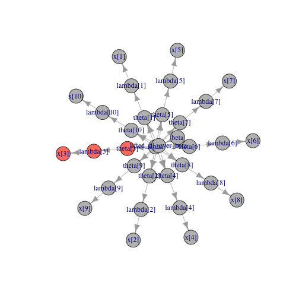
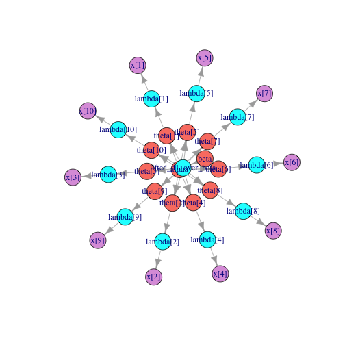
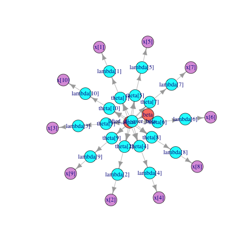
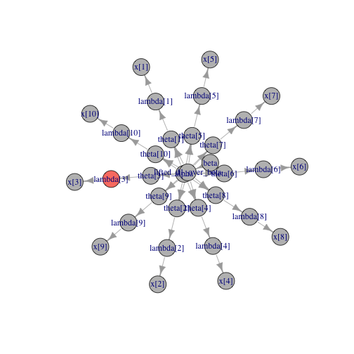
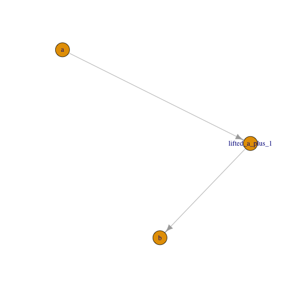

Understanding variables, nodes, lifted nodes, and graphs
April 2018
Perry de Valpine, UC Berkeley
Outline
In this module, we'll learn some terms and concepts for models in NIMBLE:
- the distinction between a variable and a node;
- how to find variables and nodes in a model;
- some different types of nodes;
- what lifted nodes are;
- an introduction to model-generic programming.
We will continue to use the pump model to illustrate concepts because it is so simple.
Pump model
## {
## for (i in 1:N) {
## x[i] ~ dpois(lambda[i])
## lambda[i] <- theta[i] * t[i]
## theta[i] ~ dgamma(alpha, beta)
## }
## alpha ~ dexp(1)
## beta ~ dgamma(0.1, 1)
## }
Variables and Nodes
- A variable is an object that contains one or more nodes.
- A node is an object declared in a model statement.
- Every node is stochastic (declared with
~) or * deterministic (declared with <-).
Example:
lambda is a variable in the pump model.lambda[3] is a node in the pump model.
A node can be scalar or multivariate.
One of the main features of the BUGS language is that a variable can contain a variety of different kinds of nodes.
Example:
- We could have a variable
X that is 10 \(\times\) 10.
X[1:10, 1] could be a stochastic node following a Dirichlet distribution.- Each
X[1, 2:5]...X[10, 2:5] could be a vector deterministic node from some calculation.
- Each
X[1,6]...X[9, 10] could be a scalar stochastic node following a gamma distribution.
X[10, 6:10] could be a stochastic node following a multivariate normal.
Accessing values of variables and nodes
Accessing variables
pump$lambda ## accesses the variable lambda
## [1] 9.430 1.570 6.290 12.600 0.524 3.140 0.105 0.105 0.210 1.050
pump$lambda[3:5] ## accesses elements of lambda
## [1] 6.290 12.600 0.524
## which may or may not be one node or multiple nodes.
Accessing nodes
pump[['lambda[3]']] ## accesses node lambda[3]
## [1] 6.29
You can also assign values (<-) to variables and nodes.
Example: If you didn't provide a good choice of initial values when you created the model (via inits argument to nimbleModel), you are free to assign values to the model via its variables or nodes.
Why does accessing nodes seem strange in R?
The reason for the node name system is model-generic programming.
- Sometimes a node will be
X[2, 3] or beta[4, 6, 1].
- These are all scalar nodes.
- We need a way to use nodes that does not depend on how many indices they have. Hence we use node names.
- We will see this more concretely later.
Learning about the variable and nodes in your model.
We can see all the node names like this:
## [1] "alpha" "beta" "lifted_d1_over_beta"
## [4] "theta[1]" "theta[2]" "theta[3]"
## [7] "theta[4]" "theta[5]" "theta[6]"
## [10] "theta[7]" "theta[8]" "theta[9]"
## [13] "theta[10]" "lambda[1]" "lambda[2]"
## [16] "lambda[3]" "lambda[4]" "lambda[5]"
## [19] "lambda[6]" "lambda[7]" "lambda[8]"
## [22] "lambda[9]" "lambda[10]" "x[1]"
## [25] "x[2]" "x[3]" "x[4]"
## [28] "x[5]" "x[6]" "x[7]"
## [31] "x[8]" "x[9]" "x[10]"
We can see just the node names from one variable or part of a variable like this:
pump$expandNodeNames('lambda')
## [1] "lambda[1]" "lambda[2]" "lambda[3]" "lambda[4]" "lambda[5]"
## [6] "lambda[6]" "lambda[7]" "lambda[8]" "lambda[9]" "lambda[10]"
pump$expandNodeNames('lambda[2:5]')
## [1] "lambda[2]" "lambda[3]" "lambda[4]" "lambda[5]"
We can see variable names like this:
## [1] "x" "lambda" "lifted_d1_over_beta"
## [4] "theta" "alpha" "beta"
We can get information about a variable like this:
pump$getVarInfo('lambda')
## Reference class object of class "varInfoClass"
## Field "varName":
## [1] "lambda"
## Field "mins":
## [1] 1
## Field "maxs":
## [1] 10
## Field "nDim":
## [1] 1
## Field "anyStoch":
## [1] FALSE
## Field "anyDynamicallyIndexed":
## [1] FALSE
## Reference class object of class "varInfoClass"
## Field "varName":
## [1] "theta"
## Field "mins":
## [1] 1
## Field "maxs":
## [1] 10
## Field "nDim":
## [1] 1
## Field "anyStoch":
## [1] TRUE
## Field "anyDynamicallyIndexed":
## [1] FALSE
logProb variables
Every stochastic node automatically has an element of a "logProb" variable associated with it. The log probability (density) of the variable will be stored in this element when it is calculated.
logProb variables are simply named as logProb_[variable name].
We sometimes call these "logProb nodes" out of habit, but they are not nodes in the graph.
Example:
pump$logProb_theta ## These were all initialized with the same value
## [1] -0.1 -0.1 -0.1 -0.1 -0.1 -0.1 -0.1 -0.1 -0.1 -0.1
## [1] -2.998011 -1.118924 -1.882686 -2.319466 -4.254550 -20.739651
## [7] -2.358795 -2.358795 -9.630645 -48.447798
You don't generally need to use logProb variables directly. Once we start programming, you will instead use
## [1] -1.882686
However it is useful to understand the existence of the logProb variables.
Finding logProb variables
Scalar nodes
For scalar stochastic nodes, the logProb node is usually obvious.
For theta[3], the log probability value will be in logProb_theta[3].
Multivariate nodes
For multivariate stochastic nodes, it is not as obvious.
If X[3:5, 2] follows a multivariate normal, its log probability value will be in logProb_X[3, 2].
You can find logProb variables like this:
pump$getVarNames(includeLogProb = TRUE)
## [1] "x" "lambda" "lifted_d1_over_beta"
## [4] "theta" "alpha" "beta"
## [7] "logProb_x" "logProb_theta" "logProb_alpha"
## [10] "logProb_beta"
Topological ordering of nodes and why it matters
Suppose we want to change the value of theta[3] and update all relevant parts of the graph.
(The meaning of "relevant" depends on our purpose of changing theta[3]. In this case imagine we are making a Metropolis-Hastings (MCMC) proposal and need to calculate its acceptance probability.)
The nodes that need to be updated are shown in red.
## function drawGraph is defined in the R file for this module
drawGraph(pump, colorBy = pump$getDependencies('theta[3]'))

Note that order matters. If we calculated the log probability density of x[3] before calculating lambda[3], then x[3] would use the old value of lambda[3]. That would be a mistake.
A valid order for calculations is called topologically sorted. Most of NIMBLE's model-querying functions will return nodes in tologically sorted order.
Types of nodes.
Some definitions:
- LHS = "left-hand-side" of a BUGS declaration
- RHS = "right-hand-side" of a BUGS declaration
Every node falls into one of following categories based on how it appears in BUGS code:
- deterministic: declared on LHS with
<-
- stochastic: declared on LHS with
~
- RHSonly: appears only on RHS of one or more declarations, never on the LHS.
Every node also falls into one of the following categories based on where it is in the graph:
- top: Has no stochastic nodes "above" it in the graph.
- latent: Has stochastic nodes "above" and "below" it in the graph.
- end: Has no stochastic nodes "below" it in the graph.
Sometimes people use ancestray terms:
- "above" = "parent" or "ancestor"
- "below" = "child" or "descendent"
Once a model is created, stochastic nodes can be labeled as data.
- Multiple copies of the same model can be created from the same BUGS code, with possibly different data nodes.
- The data label is used by programs to decide what to do.
- Values of data nodes can be changed.
- Data labels should not be changed after an algorithm like MCMC has been built for a model.
Finding out about nodes
Stochastic, deterministic, and/or data
Here is a graph color-coded by whether nodes are stochastic, deterministic, and/or labeled as data:
drawGraph(pump, colorBy = "stochDetermData")

You can select groups of nodes by these types:
## deterministic nodes
pump$getNodeNames(determOnly = TRUE)
## [1] "lifted_d1_over_beta" "lambda[1]" "lambda[2]"
## [4] "lambda[3]" "lambda[4]" "lambda[5]"
## [7] "lambda[6]" "lambda[7]" "lambda[8]"
## [10] "lambda[9]" "lambda[10]"
## all stochastic nodes
pump$getNodeNames(stochOnly = TRUE, includeData = TRUE)
## [1] "alpha" "beta" "theta[1]" "theta[2]" "theta[3]"
## [6] "theta[4]" "theta[5]" "theta[6]" "theta[7]" "theta[8]"
## [11] "theta[9]" "theta[10]" "x[1]" "x[2]" "x[3]"
## [16] "x[4]" "x[5]" "x[6]" "x[7]" "x[8]"
## [21] "x[9]" "x[10]"
## non-data stochastic nodes
pump$getNodeNames(stochOnly = TRUE, includeData = FALSE)
## [1] "alpha" "beta" "theta[1]" "theta[2]" "theta[3]"
## [6] "theta[4]" "theta[5]" "theta[6]" "theta[7]" "theta[8]"
## [11] "theta[9]" "theta[10]"
top, latend, and end
Here is a graph color-coded by whether nodes are top, latent, or end nodes.
drawGraph(pump, 'topLatentEnd')

You can also select groups of nodes by these types:
pump$getNodeNames(topOnly = TRUE) #salmon
## [1] "alpha" "beta"
pump$getNodeNames(latentOnly = TRUE) #cyan
## [1] "lifted_d1_over_beta" "theta[1]" "theta[2]"
## [4] "theta[3]" "theta[4]" "theta[5]"
## [7] "theta[6]" "theta[7]" "theta[8]"
## [10] "theta[9]" "theta[10]" "lambda[1]"
## [13] "lambda[2]" "lambda[3]" "lambda[4]"
## [16] "lambda[5]" "lambda[6]" "lambda[7]"
## [19] "lambda[8]" "lambda[9]" "lambda[10]"
pump$getNodeNames(endOnly = TRUE) #plum
## [1] "x[1]" "x[2]" "x[3]" "x[4]" "x[5]" "x[6]" "x[7]" "x[8]"
## [9] "x[9]" "x[10]"
Combined categories
Say you want to know what the stochastic, latent nodes are.
pump$getNodeNames(stochOnly = TRUE, latentOnly = TRUE)
## [1] "theta[1]" "theta[2]" "theta[3]" "theta[4]" "theta[5]"
## [6] "theta[6]" "theta[7]" "theta[8]" "theta[9]" "theta[10]"
RHSonly nodes
You also can query the model for RHSonly nodes:
pump$getNodeNames(includeRHSonly = TRUE)
## [1] "alpha" "beta" "lifted_d1_over_beta"
## [4] "theta[1]" "theta[2]" "theta[3]"
## [7] "theta[4]" "theta[5]" "theta[6]"
## [10] "theta[7]" "theta[8]" "theta[9]"
## [13] "theta[10]" "lambda[1]" "lambda[2]"
## [16] "lambda[3]" "lambda[4]" "lambda[5]"
## [19] "lambda[6]" "lambda[7]" "lambda[8]"
## [22] "lambda[9]" "lambda[10]" "x[1]"
## [25] "x[2]" "x[3]" "x[4]"
## [28] "x[5]" "x[6]" "x[7]"
## [31] "x[8]" "x[9]" "x[10]"
In this case, there are no RHSonly nodes. We might think t nodes are RHSonly, but in fact since t was provided in constants, it is no longer considered to be a variable in the model. Its values have been permanently substituted where needed.
We could modify how we create the model as follows to see t nodes appear as RHSonly.
## Move "t" from constants to data
pumpData2 <- c(pumpData, pumpConsts['t'])
pumpConsts2 <- pumpConsts['N']
pump2 <- nimbleModel(
pumpCode,
data = pumpData2,
constants = pumpConsts2
)
## defining model...
## building model...
## setting data and initial values...
## running calculate on model (any error reports that follow may simply reflect missing values in model variables) ...
## checking model sizes and dimensions... This model is not fully initialized. This is not an error. To see which variables are not initialized, use model$initializeInfo(). For more information on model initialization, see help(modelInitialization).
## model building finished.
## [1] "alpha" "beta" "lifted_d1_over_beta"
## [4] "theta[1]" "theta[2]" "theta[3]"
## [7] "theta[4]" "theta[5]" "theta[6]"
## [10] "theta[7]" "theta[8]" "theta[9]"
## [13] "theta[10]" "lambda[1]" "lambda[2]"
## [16] "lambda[3]" "lambda[4]" "lambda[5]"
## [19] "lambda[6]" "lambda[7]" "lambda[8]"
## [22] "lambda[9]" "lambda[10]" "x[1]"
## [25] "x[2]" "x[3]" "x[4]"
## [28] "x[5]" "x[6]" "x[7]"
## [31] "x[8]" "x[9]" "x[10]"
pump2$getNodeNames(includeRHSonly = TRUE)
## [1] "alpha" "beta" "t[1]"
## [4] "t[2]" "t[3]" "t[4]"
## [7] "t[5]" "t[6]" "t[7]"
## [10] "t[8]" "t[9]" "t[10]"
## [13] "lifted_d1_over_beta" "theta[1]" "theta[2]"
## [16] "theta[3]" "theta[4]" "theta[5]"
## [19] "theta[6]" "theta[7]" "theta[8]"
## [22] "theta[9]" "theta[10]" "lambda[1]"
## [25] "lambda[2]" "lambda[3]" "lambda[4]"
## [28] "lambda[5]" "lambda[6]" "lambda[7]"
## [31] "lambda[8]" "lambda[9]" "lambda[10]"
## [34] "x[1]" "x[2]" "x[3]"
## [37] "x[4]" "x[5]" "x[6]"
## [40] "x[7]" "x[8]" "x[9]"
## [43] "x[10]"
Now we see that t nodes have appeared when we ask to include RHSonly nodes.
Topologically sorting nodes
If for some reason you have a collection of node names and need them topologically sorted:
pump$topologicallySortNodes(c('x[1:3]','beta','theta[1:3]'))
## [1] "beta" "theta[1]" "theta[2]" "theta[3]" "x[1]" "x[2]"
## [7] "x[3]"
Often there is more than one valid topological sorting, but NIMBLE chooses one that is usually intuitive and uses it for your model.
Inspecting the model: Querying graph dependencies
There are several kinds of dependencies that may be needed in different circumstances.
- Stochastic dependencies (called the Markov blanket in computer science) terminate at stochastic nodes (inclusive). These are the dependencies needed for many kinds of MCMC samplers.
pump$getDependencies('theta[3]')
## [1] "theta[3]" "lambda[3]" "x[3]"
- Deterministic dependencies terminate at stochastic nodes but omit the stochastic nodes. These can be useful for implementing a particle filter.
pump$getDependencies('theta[3]', determOnly = TRUE)
## [1] "lambda[3]"

- Other ways to control the dependency query can be found by
args(pump$getDependencies)
## function (nodes, omit = character(), self = TRUE, determOnly = FALSE,
## stochOnly = FALSE, includeData = TRUE, dataOnly = FALSE,
## includeRHSonly = FALSE, downstream = FALSE, returnType = "names",
## returnScalarComponents = FALSE)
## NULL
## or help(modelBaseClass)
The importance of querying a model: lifted nodes
You should never assume you know what nodes are in a model simply because you wrote the BUGS code.
NIMBLE implements some features by inserting its own nodes. These are called lifted nodes.
Let's look at the two main ways this happens:
m1 <- nimbleModel(
nimbleCode({
tau ~ dunif(0, 100)
x ~ dnorm(0, tau) #by default, tau is a precision
}))
## defining model...
## building model...
## running calculate on model (any error reports that follow may simply reflect missing values in model variables) ...
## checking model sizes and dimensions... This model is not fully initialized. This is not an error. To see which variables are not initialized, use model$initializeInfo(). For more information on model initialization, see help(modelInitialization).
## model building finished.
## [1] "tau" "lifted_d1_over_sqrt_oPtau_cP"
## [3] "x"
The node lifted_d1_over_sqrt_oPtau_cP has been inserted between tau and x. The resulting model would equivalently have been created by this BUGS code:
nimbleCode({
tau ~ dunif(0, 100)
lifted_d1_over_sqrt_oPtau_cP <- 1/sqrt(tau)
x ~ dnorm(0, sd = lifted_d1_over_sqrt_oPtau_cP) #by default, tau is a precision
}))
NIMBLE has lifted the calculation of standard deviation from precision so that it is part of the model's graph. Therefore you will make a mistake if you assume that the dependencies of tau include only x:
m1$calculate(c('tau','x')) ## Wrong: the lifted node is being neglected
The correct way to do this is with model-generic programming:
m1$calculate( m1$getDependencies('tau') )
The second common situation that creates lifted nodes is:
m2 <- nimbleModel(
nimbleCode({
a ~ dnorm(0, 1)
b ~ dnorm(a + 1, 1)
}))
## defining model...
## building model...
## running calculate on model (any error reports that follow may simply reflect missing values in model variables) ...
## checking model sizes and dimensions... This model is not fully initialized. This is not an error. To see which variables are not initialized, use model$initializeInfo(). For more information on model initialization, see help(modelInitialization).
## model building finished.

## [1] "a" "lifted_a_plus_1" "b"
In this case, NIMBLE lifted the expression a+1 and created a node for it. Again the correct way to program is to query a model to learn about its nodes. Do not assume you know what the nodes are.